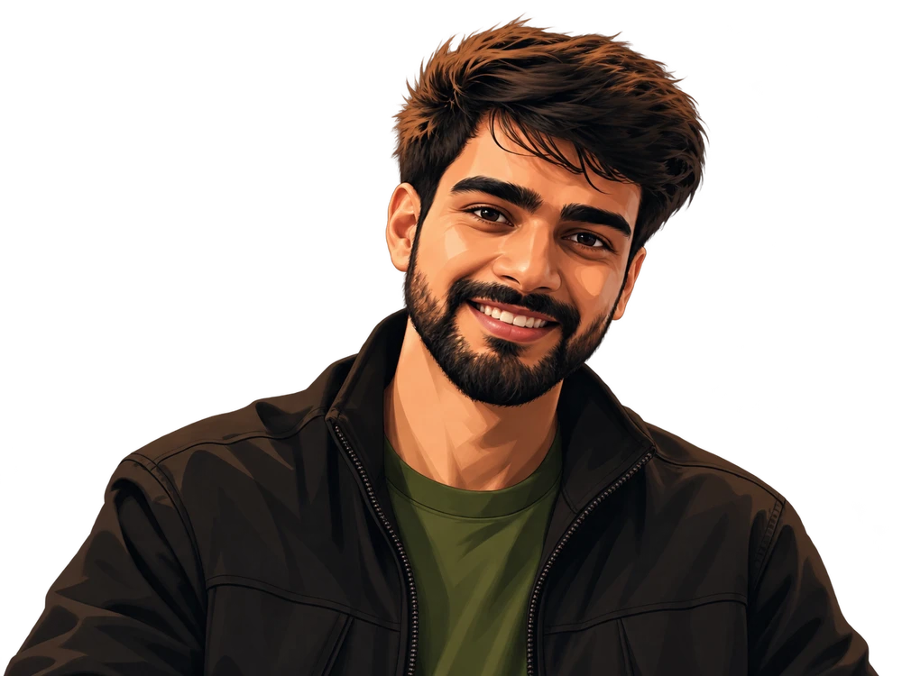
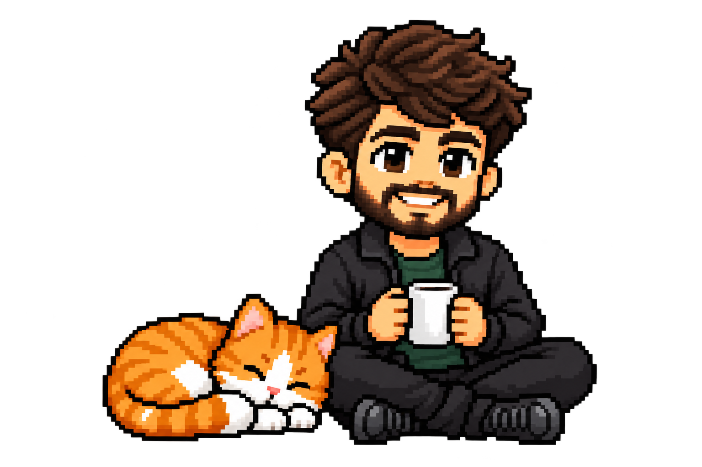

Hi, I’m Omkar.
Software engineer at Anarock in Bengaluru. I build product interfaces, backend APIs, and AI workflows.

Selected work.
Saathi
Next.js · TypeScript · PostgreSQL · Redis Streams · SSE- The problem
- Shared work becomes unreliable when clients disconnect or people edit stale data.
- My contribution
- Task, membership, and invitation workflows, including permissions and live updates.
- A key decision
- Replay missed events with Redis Streams and SSE; reject stale edits using version checks.
- Evidence
- View source ↗
Personal project
Currently buildingConfigurable product editors and tenant-scoped APIs at Anarock.
How I got here.
JULY 2026 → PRESENT
From features to the whole system.
Moving from internship to SDE I has meant looking beyond a single feature: tracing its dependencies, handling failure, and following the change through the product.


How I approach my work.
I start by understanding the person using a product and tracing the system behind it. I question complexity before adding to it, build on good existing tools, and pay attention to the details people notice: clear feedback, recoverable mistakes, and an experience that makes sense.
Let’s connect.
